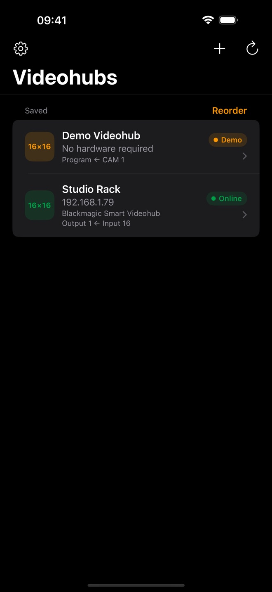
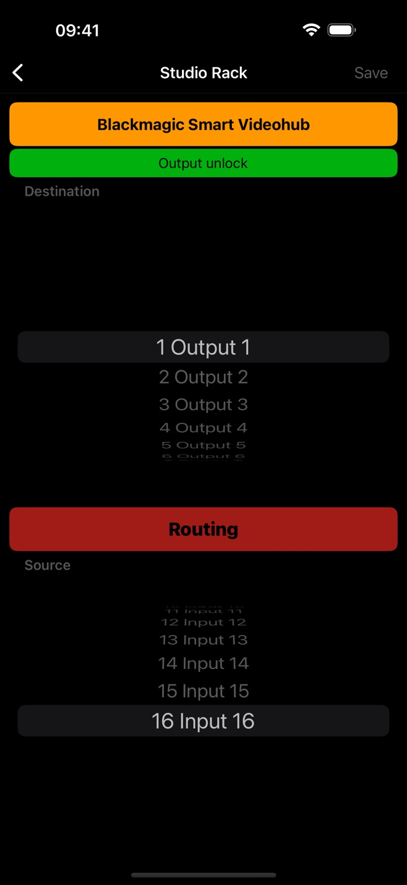
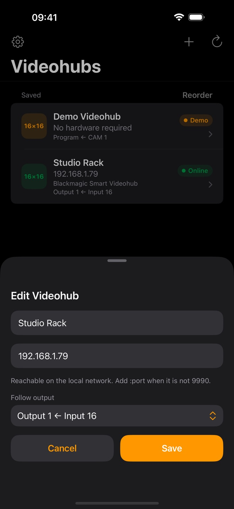
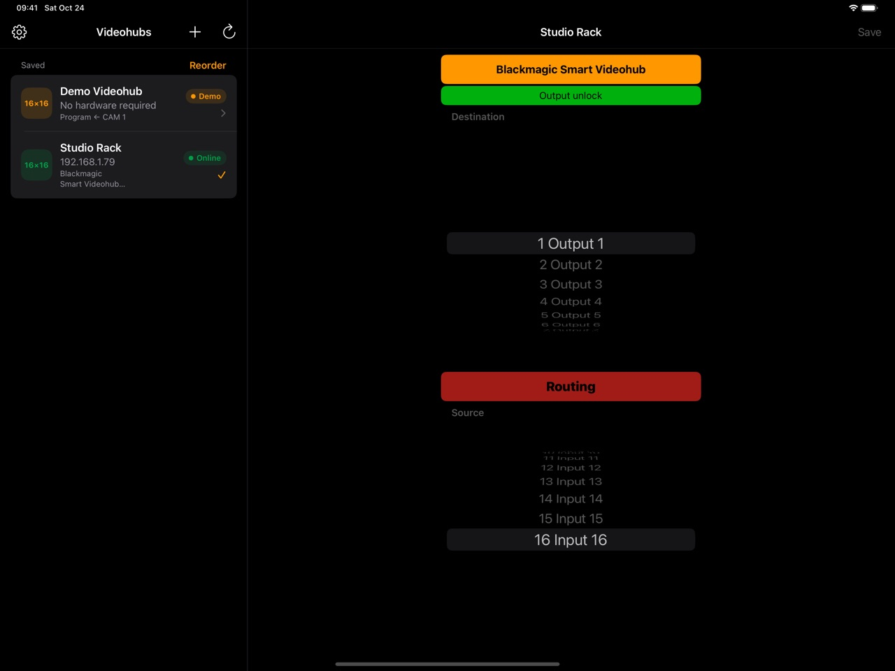

VideoHub Control
Пульт для матриц Blackmagic Videohub.
- iPhone
- iPad
- локальная сеть
- демо-матрица без железа
Выберите выход, выберите источник, отправьте. VideoHub Control управляет матрицами Blackmagic Design Videohub по локальной сети — из аппаратной, со сцены или из зала, с телефона в руке.



Список матриц
Сохранённые матрицы видно сразу: на связи ли каждая и куда сейчас скоммутирован выбранный вами выход — например, что идёт в Program. Матрицы, которые объявляют себя в сети, находятся сами. Хаб запоминается по его Unique ID, поэтому если DHCP выдал ему новый адрес, обновится сохранённая строка, а не появится дубликат.
Рутинг
Верхнее колесо — выход, нижнее — источник. Нижнее колесо само встаёт на вход, который сейчас идёт в выбранный выход, поэтому видно, что вы меняете. Команда уходит по второму тапу «Routing» — от случайного переключения в эфире; подтверждение можно выключить в настройках. Кнопка становится зелёной, когда матрица подтвердила рутинг, а если выход переключил другой оператор, колесо подтянется само.
Долгое нажатие на колесо переименовывает порт. Имя записывается в саму матрицу, так что его видят все операторы и все программы.
Блокировка выходов и пресеты
Выход можно заблокировать, чтобы его никто не переключил. Чужая блокировка видна, и перед её снятием приложение спросит. Пресет сохраняет всю таблицу рутинга матрицы и отправляет её одной командой. Блокировка и пресеты — встроенные покупки.

И ещё
- Демо-матрица 16×16 — посмотреть приложение без железа.
- Нестандартный порт пишется прямо в адресе:
10.0.0.2:9991. - Studio Videohub: мониторные выходы идут в том же колесе после обычных.
- Старые Compact и Smart Videohub тоже подключаются.
- Матрицей можно поделиться ссылкой — она добавится в список на другом телефоне.
- Журнал диагностики из настроек, если матрица ведёт себя не так, как ожидается.
VideoHub Control
A remote for Blackmagic Videohub routers.
- iPhone
- iPad
- local network
- demo router, no hardware needed
Pick the destination, pick the source, send it. VideoHub Control drives Blackmagic Design Videohub routers over the local network — from the gallery, the stage or the floor, with the phone in your hand.
The list
Your saved routers at a glance: whether each one is online and where the output you care about is routed right now — what is on Program, say. Routers that advertise themselves on the network are found for you. A hub is remembered by its Unique ID, so when DHCP hands it a new address the saved row is updated instead of a duplicate appearing.
Routing
The top wheel is the destination, the bottom one the source. The source wheel turns to whatever is on the chosen output right now, so you always see what you are about to change. The route goes out on a second tap of Routing, so nothing switches on air by accident; the confirmation can be turned off in Settings. The button turns green once the router confirms the route, and when another operator re-routes the output, the wheel follows.
Press and hold a wheel to rename its port. The name is written to the router itself, so every operator and every app sees it.
Output locks and presets
Lock an output so nobody can re-route it. Someone else's lock is shown, and the app asks before overriding it. A preset stores the router's whole routing table and sends it back in one command. Locks and presets are in-app purchases.
And more
- A 16×16 demo router to try the app without hardware.
- A non-standard port goes right in the address:
10.0.0.2:9991. - Studio Videohub: the monitoring outputs follow the regular ones on the same wheel.
- Older Compact and Smart Videohub models connect too.
- Share a router as a link, and it is added to the list on another phone.
- A diagnostics log from Settings when a router does not behave as expected.